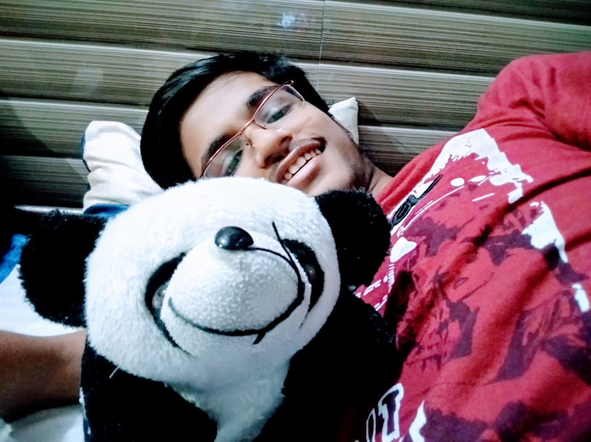

<!--Blatantly copied from shardulc-->
<!DOCTYPE html>
<html>
    <meta charset="UTF-8">
    <meta name="viewport" content="width=device-width, initial-scale=1.0">
    <meta http-equiv="X-UA-Compatible" content="ie=edge">
    <link rel="stylesheet" href="./css/index.css">
    <title> Rahul Jha</title>
</html>
<body>
    <div id="headerbar">
        <a id="kerb" href="index.html">Rahul Jha</a>
        <div id="navbar">
            <a href="index.html" class="navbutton current" id="aboutButton">about</a>
            <a href="http://www.c17e.github.io" class="navbutton" id="blogButton">blog</a>
            <a href="projects.html" class="navbutton" id="projectsButton">projects</a>
        </div>
    </div>
    <hr>
    <div class="content" id="about">
        <div id="propicDiv">
            <a href="assets/profile.jpg">
                
            </a>
        </div>
    
        <p>
            I am Rahul Jha, a teenager from New Delhi, India. I can proudly say that I am more intelligent than the white dog that once chased me.
            <div class="infoList">
                <span class="infoDesc">Academic interests:</span><span class="infoItem">
                    <ul>
                        <li>Mathematics: everything, especially probability and analysis. Intended major.</li>
                        <li>Physics: the math intensive bits, like waves and fluid mechanics</li>
                        <li>Computer Science: cryptography</li>
                    </ul>
                </span><br>
                <span class="infoDesc">Other interests:</span><span class="infoItem"><br><br>
                    Not much, tbh. I like tinkering with computers and solving difficult puzzles. And yes, I like the <a id='linkk' href=''> Indian Express </a>  more than
                    my closest friend. 
                </span>
            </div>
        </p>
        <h4><code>$ whoami | more</code></h4>
        <p>
        Okay, so I guess it is obvious how much I love math. And while loving something does not require being good at it (just ask my crush 😢), I am actually good at math. Apart from math, I am interested in programming and physics.
        I am a congenital narcissist (now don't look at my picture- not every narcissist has a nice mug) and a huge fan of Queen (the band). Like most other Indians, I am a 
        <span class = 'emp'> trilingual </span>, proficient in Hindi-Urdu, English and <span class = 'emp' >Maithili</span>. My mom says I have a good sense of humor, and she is always right.
        I hold the dubious honor of being the <strong>smartest</strong> kid in my school year. I have never had serious friendships but like almost every other boy, I've had a plenty of crushes.


        </p>
    <div id="footer">
            <a href="http://github.com/slytherin69" target="_blank">
              
            </a>
        
            <a href="http://www.keybase.io/theslytherin" target="_blank">
              
            </a>

            <a href="mailto:rahuljha.newdelhi@gmail.com" target="_blank">
                
              </a>


        
    </div>
        
</body>